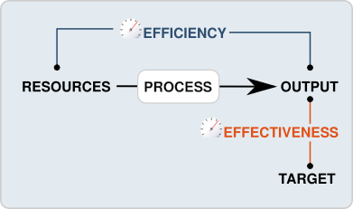
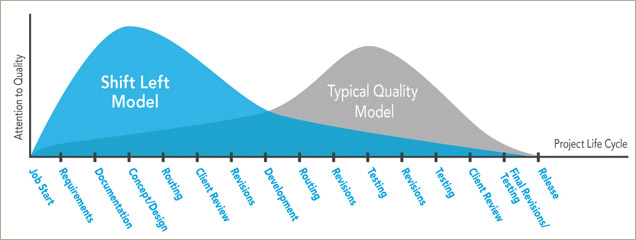

Shifting Quality
How to keep up with agile testing
Who am I?
- Chief Trolling Officer (a.k.a QA Manager) @Athlon
- Startup founder @AssertStack
- Big fan of automation and CICD
This talk is NOT about:
keyboard shortcuts
monologue
selling futuristic ideas
enforcing "new" practices
Shift-left
“This delay is particularly disturbing because from 45 percent to 65 percent of defects are introduced in the requirements, architecture, and design activities.”~ Wikipedia
SDLC
If your SDLC looks like this:

You are doing it wrong!
Something to consider
- Software is not delivered on time?
- Software development costs are high?
- Software quality does not meet standards?
- Testing is not proper, leading to business losses?
- Used software development approaches are becoming ineffective to curb the expectations?
Quality assurance

The Basics
- Testing begins, NOT when something becomes testable, but instead at the moment there exists something that needs testing!
- Early testing Ultimately improves faster time to market

Manual & Exploratory testing
- Is not ad-hoc activity!
- Requires plannig
- Requires scheduling
- Requires execution
- Requires reporting
- Requires analysis
- Requires skill
Automation testing
- Is development activity!
- Is integrated development effort
- Is something you can’t ‘bolt on’ into a system
Shift left
Model testing moves testing to the left side of the Vs (V-model) by testing executable requirements, architecture, and design models. This shift enables testing to begin almost immediately, instead of waiting a long time (traditional), medium time (incremental), or a short time (Agile/DevOps) until software on the right side of the Vs is available to test.
Is 'Shift Left' A New Idea?
In the 1950's, programmers knew that it was better to start testing earlier
Benefits:
- Bugs are found and fixed early
- Saving time and resources
- Allowing good test coverage
- Better team work with developers and testers – this model minimizes frictional differences between them
- Delivery of software is expedited
- Cost effectiveness
Main concept
What to expect from now on?
- Plan and create test cases in advance
- Support a periodic cycle of integration testing for the components/applications under change
- Prioritize, process, and resolve feedback by development teams within the feedback loop
- Whatever testing you can perform - shifts left
- What to expect from now on (2)
- Gather early details about testing priorities and focus
- Identify types of tests to be performed
- Prepare Requirement Traceability Matrix (RTM)
- Identify test environment details where testing is supposed to be carried out
- Automation feasibility analysis (if required)
Now, remember again the SDLC from the begging of this presentation!
Test
- Test execution
- Test reporting
- UAT

QA flow example
QAs meets with Business/Design/Whoever in order to understand what to test against
QA will carefully review any Business Requirement Documents (SoW)
Based on the details from the above, QA will start writing high test cases, usually starting with UI test cases and then going into integration test cases afterwards
All through the steps above, QA needs to check with Business to get a stamp of approval on the test cases being written!
Considerations

Overall
- Identify feedback velocity and means to measure it
- Scope of automation pipeline (build, deploy, test)
- Decide which changes will improve team’s success (versus introduce functionality)
- Continuously improve and plan for next steps (they will be needed)
- Combines very well with ATDD
Shift right
What is that?
- Not to move testing at the very far end of the dev flow
- It means to continue testing under the production conditions
- By shifting right, testers are able to detect the issues that cannot be discovered during development
- It ensures the accurate evaluation of product/service functioning under real world conditions
- The end of coding and system checking on a machine are not the final steps of dev procedure.
You will need months to find out such problems, real usage in real environment.
Monitor your applications and services
- Know how your app performance is affecting your business
-
Web infrastructure monitoring
- Application Performance (APM) monitoring
- Real user monitoring (RUM)
- Server monitoring
- Network monitoring
Main flavors
- Synthetic (Active)
- Real user monitoring (Passive)
Real user monitoring
- User browser metrics - collected from Chrome, Firefox, Opera etc.
- Peroformance insight into different platforms - Desktop, Mobile
- Monitor individual Web transactions - Page rendering, Document processing and downloading
Application Performance monitoring
- Detect and diagnose complex Application performance problems
- Throughput
- Response times
- DB operations
- Background transactions
Key differences
- RUM
- Cast a wide net
- Identify key areas of concern
- Map performance to human behavior and $$$
- Understand real user impact
-
Synthetic
- Diagnostic tool
- Detect issues before your end user do
- Reproduce a problem found with RUM
Application Performance
-
Defined in terms of
- Response Time: How fast is my application?
- Resource Usage: How much CPU/memory/network/etc. does my application need?
- Consistency: Does my application behave consistenly in time?
Today’s applications
- Distributed
- Heterogeneous
- Composite
- Multi-tiered
- Multi-technologies
- Multi-vendors
- You name it ...
Scattered information
- Performance information comes from a number of places and systems
- Backends - Databases, Legacy systems
- App and Web Servers
- Systems / Networks
Synthetics

- Ping monitor - simple and quick network checks, used to show Your servers reachability
- Simple Browser - request made to Your site through an instance of a browser and content parsing libraries
- API Tests - requests made to Your API endpoints and the recorded responses
- Scripted Browser - real browser data, generated from the visits to Your site
Agent based monitors
- Able to gather performance information from Production environments
- With minimum overhead
- Able to reconsile and link collected data
How to get started?
- Here's where to start. Pick one small team/project, and have a tester work with them on a feature from the very beginning.
- DEMAND QUALITY and tests as definition of done.
- No need to wait for the next project, do it next sprint.
“But as it recently occurred to me: we're all testers now.”~ Beyond QA - HP Enterprise
DIY - Synthetics
“The older model will, over time, make way for the newer model. This will be a case Darwinian natural selection played out in the matter of only a few short years. The fittest will survive with the timeframe determined by economics and quality of execution.”~ J.A. Whittaker - Exlporatory software testing, 2009